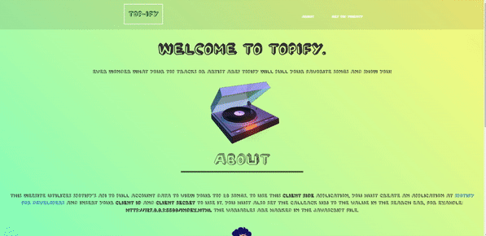
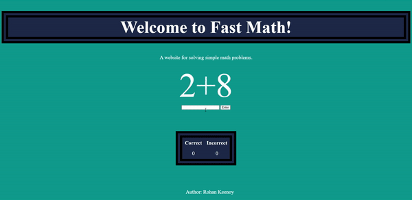
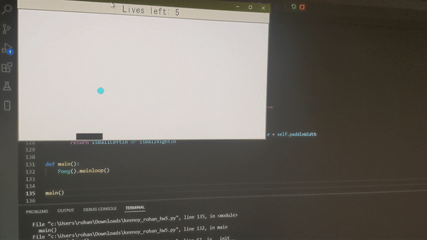

I wanted to learn something new about programming and I had never used Unity or C# before.
My girlfriend and I decided to try to make a simple game in unity. We decided to focus on financial well-being. The idea of the game was for the player to pick up berries and exchange for cash. Bread would be like a stock and varried in price to where you could buy sell bread to get to a certain level of cash.
We got some of it going, but we are revisiting it once we have time to complete our game. I would like to add a level system, growing mechanic, and more!
It was a great learning experience and I'm excited for the next one.
House song written in RUBY
So, what does a musician-programmer do when his guitar strings are broke, out of gas, and has nothing to do for the day?
This was the position I was in when I decided to give this thing a go. I had sometime to burn and remembered
that I saw some guy (Sam Aaron) live performing music from code.
I started google searching and daydreaming about how he was doing it. Was he using samples stored in an array and then calling them to fire off at a certain time?
I then came accross a program called sonic Pi that helps you write music with RUBY.
I spent about 3-4 hours non-stop trying to get the timing right and get the right noises to fire off. I kinda went at it the same approach I use to make music - blindly.
I learned that my two passions should not have the same creative mindset though! It was a bit of a headache with a ton of threaded for loops firing off at the same time and then sleeping.
This was my first start with RUBY. It was a good way to spend some free time. I didn't learn too much that I didn't know before regarding programming, however, I discovered that
there is an art to planning how you are going to approach a problem. Need a super bad-ass guitar improv? Cool, figure out the key and shred. Need some code written? PLAN IT OUT!!!
Also, while this is really cool and exciting, I think I'll stick to my main instruments.
Top-ify

Topify is a web app I made during class. Instructions on how to use it are on the webpage since I am not able to publish full stack apps on github.
The code is messy because I learned ajax doing this project. It orginally started as a playlist generator, but I figured it'd be much easier to make that as a full web app. This app uses ajax calls to spotify api. It was the first time I've made api calls like that.
Eli's Tattoos
I made one of my good friends a website for his tattoo services. It is very similar to mine, but his has better mobile responsiveness. The code is pretty cluttered, so beware if you go look at the source code.
It has a dynmaic gallery which I had to watch a turtorial for, but was able to understand how it works.
Music Visualizer Website
I find music applications so boring nowadays. I remember when I was a kid and my dad had a music visualizer called winamp. It was so bright and colorful. So I decided to make one using apis. It made me wonder, is it possible to do for a website?
It sent me down a google-rabbit hole. I found web audio api which I knew I would probably need, but I didn't know how I could add visualizers. Maybe a sine wave, but I wasn't too sure how to go about that. I then found the butterchurn api.
This was my first project ever using anyform of jquery and using apis. I installed both webaudio and butterchurn apis. I initially got it going by myself and then forked the code over for the file update and merged my code with their example. I also added full-screen functionallity where it changes the canvas to the size of the screen.
There are several things I would like to add to this web app that I would like to add when I get the time to. I would like to add a playlist container to show you what is playing or what is next, make it mobile friendly, and probably just redesign some of the features, so I will continue working on my jquery and design ideas!
Fast Math

I built this to teach myself JavaScript ahead of the class I was in. I wanted to build something to help elderly people work with numbers. Diseases such as alzheimer's disease, dementia, and stroke can leave a person unable to think mathematically like they used to.
I wanted something elderly folk in my life could practice using a calculator and try it mathematically. Super easy interface and accessible. I have seen the frustration with numbers people have if they suffer through this, while the likelyhood of the ability coming back 100$ is slim, I would like them not to feel overwhelmed and hopefully get a little more comfortable with it.
Python Pong Game

This project was written when I first learned Python. I really enjoyed learning how tkinter works for guis and would like to expand upon that in the future.
Various Scripts
I have a private repository of my assignments on github. If you need access to look at code, please let me know! I have examples of java, c++, and python I can put in it.